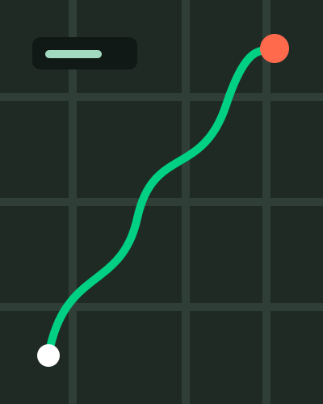
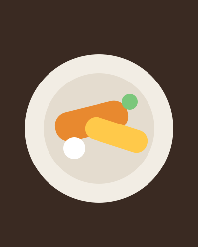

<section class="slide" id="photo-strip" data-section="Demo" data-title="While the agents worked, I went for a walk">
  <div class="eyebrow">While it ran</div>
  <h2 class="title title--wide">While the agents worked, <em>I went for a walk.</em></h2>
  <div class="strip" style="--n:4">
    <figure><figcaption><b>19:50</b>Task started</figcaption></figure>
    <figure><figcaption><b>20:03</b>First walk, 2.9 km</figcaption></figure>
    <figure><figcaption><b>20:53</b>Dinner, checks still running</figcaption></figure>
    <figure><span class="strip-badge" aria-hidden="true">Done</span><figcaption><b>22:05</b>Still out walking</figcaption></figure>
  </div>
  <div class="strip-metrics" data-step>
    <div><b>4.9 km</b><span>walked</span></div>
    <div><b>22</b><span>checks run unattended</span></div>
    <div><b>0</b><span>times I touched the keyboard</span></div>
  </div>
  <aside class="notes">
    <p><b>7:00–7:40.</b> Let the pictures carry it, then Space for the numbers.</p>
    <p class="src"><code>.strip</code> takes 3–5 <code>figure</code>s (<code>--n</code> sets the columns, <code>--h</code> the image height) with an optional <code>.strip-badge</code>. <code>.strip-metrics</code> is the optional metric row. The pictures here are drawn samples; swap in your own photos and say whose they are.</p>
  </aside>
</section>
